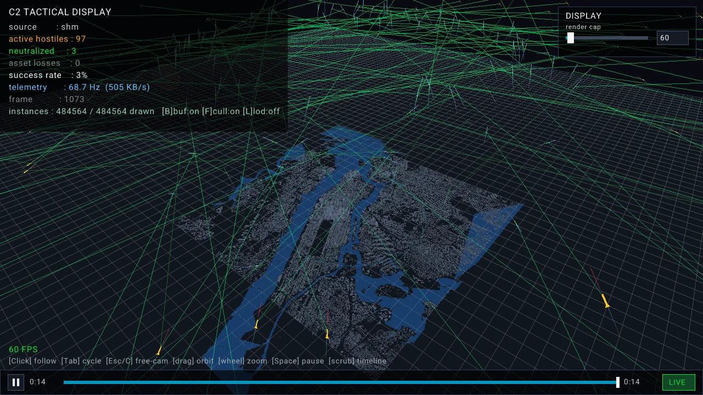
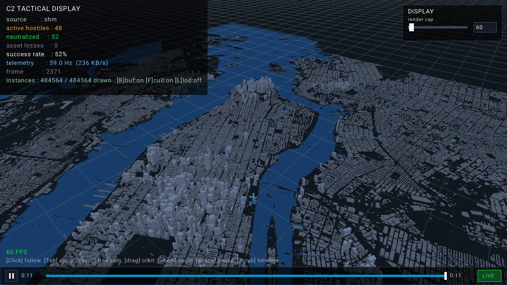
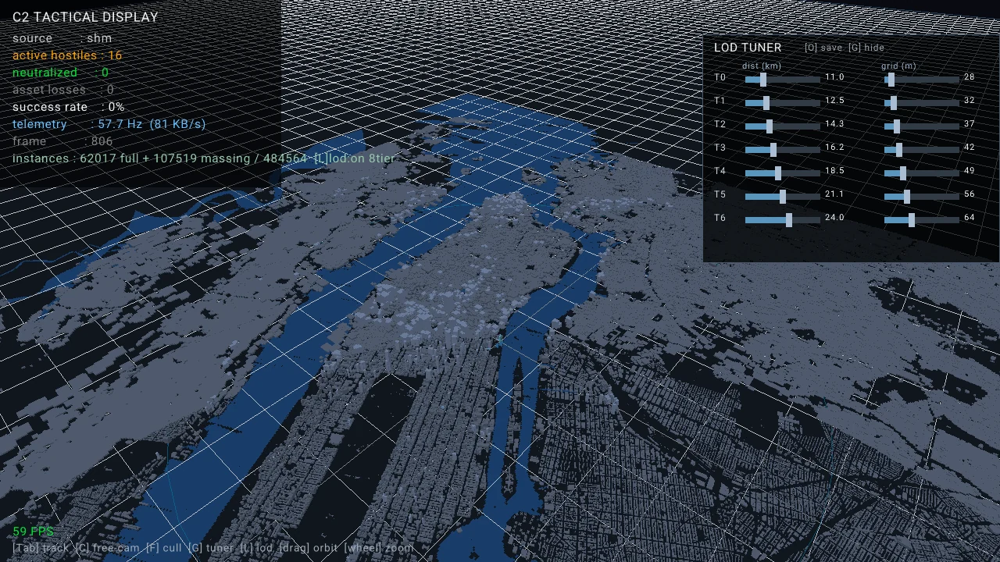

Real-Time Air Defense & Telemetry Suite
Defense Simulation
A multithreaded engine that tracks hostile missiles, assigns interceptors, and guides them in with Proportional Navigation, then streams every frame to a separate 3D command-and-control display built on a real 1:1 map of Midtown Manhattan.

100-threat raid, 14 s in. Green lines are ProNav line-of-sight from each interceptor to its assigned hostile. HUD reads live telemetry rate and throughput.

The defended asset: the UN Secretariat. Buildings extruded from OpenStreetMap footprints at their real heights, drawn with instanced meshes in one call per building class.

In-app LOD tuner. A debug panel I built to tune seven level-of-detail tiers live while holding 60 FPS across the whole metro.
The guidance demo is a 2D sketch of the engine's guidance law using the scenario's own numbers: 950 m/s threats weaving at 12 g, 1,300 m/s interceptors limited to 55 g, a 20 m swept proximity fuze.
- Proportional Navigation with real airframe limits.The command a = N·(Vr × Ω) is capped at the interceptor's G-limit and thrust, so rounds arc through turns instead of pivoting. Convergence is tested against crossing, inbound, and weaving targets for N = 3, 4, and 5.
- An octree that rebuilds 60 times a second without touching the allocator.Nodes live in one contiguous pool and reset instead of freeing. Profiling on a Pi 4 showed allocator churn was the real cost; pooling cut frame time from 12.3 ms to 6.0 ms and L1 cache misses by 44%.
- A swept proximity fuze.At Mach 3 closing speeds a round moves about 30 m per frame, so a point check tunnels straight through the target. The fuze tests closest approach across the whole step.
- Two telemetry transports behind one interface.Locally, a lock-free seqlock ring in shared memory with zero allocation on publish. Remotely, UDP with a zig-zag + VLQ codec that shrinks a 30 B record to about 12 to 15 B, so the entire scene fits in one datagram.
- Engineered like it will be maintained.CMake presets for MSVC and Linux, a data-driven YAML scenario, 61 GoogleTest cases, and a clean Valgrind report: 0 bytes in use at exit.
- Frame time, 10,000 entities
- 0.44ms
- Frame time, 50,000 entities
- 1.6ms
- Octree rebuild, pooled vs. linked (Pi 4)
- 2.05× faster
- Building instances at 60 FPS
- 484,564
- Bytes per track on the wire
- 12 to 15B
- Unit tests / leaked bytes
- 61 / 0
defense_simThread pool kinematics at 60 Hz → octree index → ProNav guidance → engagement manager
Shared memorySeqlock ring buffer, zero-copy, local
UDPZig-zag + VLQ codec, remote over Tailscale
ITelemetryConsumerTransport-agnostic interface; one flag picks the source
c2_visualizerRaylib 3D display and HUD
telemetry_monitorConsole threat and rate readout